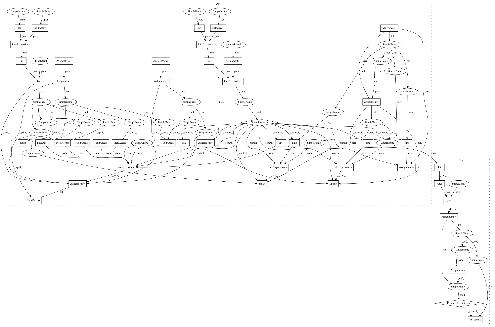

4a89361ed8140c3ca89d02feb4ed0d850737fc85,gobang/tensorflow/NNet.py,NNetWrapper,train,#NNetWrapper#Any#,36
Before Change
for epoch in range(args.epochs):
print("EPOCH ::: " + str(epoch+1))
data_time = AverageMeter()
batch_time = AverageMeter()
pi_losses = AverageMeter()
v_losses = AverageMeter()
end = time.time()
bar = Bar("Training Net", max=int(len(examples)/args.batch_size))
batch_idx = 0
// self.sess.run(tf.local_variables_initializer())
while batch_idx < int(len(examples)/args.batch_size):
sample_ids = np.random.randint(len(examples), size=args.batch_size)
boards, pis, vs = list(zip(*[examples[i] for i in sample_ids]))
// predict and compute gradient and do SGD step
input_dict = {self.nnet.input_boards: boards, self.nnet.target_pis: pis, self.nnet.target_vs: vs, self.nnet.dropout: args.dropout, self.nnet.isTraining: True}
// measure data loading time
data_time.update(time.time() - end)
// record loss
self.sess.run(self.nnet.train_step, feed_dict=input_dict)
pi_loss, v_loss = self.sess.run([self.nnet.loss_pi, self.nnet.loss_v], feed_dict=input_dict)
pi_losses.update(pi_loss, len(boards))
v_losses.update(v_loss, len(boards))
// measure elapsed time
batch_time.update(time.time() - end)
end = time.time()
batch_idx += 1
// plot progress
bar.suffix = "({batch}/{size}) Data: {data:.3f}s | Batch: {bt:.3f}s | Total: {total:} | ETA: {eta:} | Loss_pi: {lpi:.4f} | Loss_v: {lv:.3f}".format(
batch=batch_idx,
size=int(len(examples)/args.batch_size),
data=data_time.avg,
bt=batch_time.avg,
total=bar.elapsed_td,
eta=bar.eta_td,
lpi=pi_losses.avg,
lv=v_losses.avg,
)
bar.next()
bar.finish()
def predict(self, board):
After Change
print("EPOCH ::: " + str(epoch + 1))
pi_losses = AverageMeter()
v_losses = AverageMeter()
batch_count = int(len(examples) / args.batch_size)
// self.sess.run(tf.local_variables_initializer())
t = tqdm(range(batch_count), desc="Training Net")
for _ in t:
sample_ids = np.random.randint(len(examples), size=args.batch_size)
boards, pis, vs = list(zip(*[examples[i] for i in sample_ids]))
// predict and compute gradient and do SGD step
input_dict = {self.nnet.input_boards: boards, self.nnet.target_pis: pis, self.nnet.target_vs: vs,
self.nnet.dropout: args.dropout, self.nnet.isTraining: True}
// record loss
self.sess.run(self.nnet.train_step, feed_dict=input_dict)
pi_loss, v_loss = self.sess.run([self.nnet.loss_pi, self.nnet.loss_v], feed_dict=input_dict)
pi_losses.update(pi_loss, len(boards))
v_losses.update(v_loss, len(boards))
t.set_postfix(Loss_pi=pi_losses, Loss_v=v_losses)
def predict(self, board):
board: np array with board
In pattern: SUPERPATTERN
Frequency: 6
Non-data size: 47
Instances
Project Name: suragnair/alpha-zero-general
Commit Name: 4a89361ed8140c3ca89d02feb4ed0d850737fc85
Time: 2020-05-05
Author: mikhail.simin@gmail.com
File Name: gobang/tensorflow/NNet.py
Class Name: NNetWrapper
Method Name: train
Project Name: suragnair/alpha-zero-general
Commit Name: 4a89361ed8140c3ca89d02feb4ed0d850737fc85
Time: 2020-05-05
Author: mikhail.simin@gmail.com
File Name: othello/tensorflow/NNet.py
Class Name: NNetWrapper
Method Name: train
Project Name: suragnair/alpha-zero-general
Commit Name: 4a89361ed8140c3ca89d02feb4ed0d850737fc85
Time: 2020-05-05
Author: mikhail.simin@gmail.com
File Name: tafl/pytorch/NNet.py
Class Name: NNetWrapper
Method Name: train
Project Name: suragnair/alpha-zero-general
Commit Name: 4a89361ed8140c3ca89d02feb4ed0d850737fc85
Time: 2020-05-05
Author: mikhail.simin@gmail.com
File Name: connect4/tensorflow/NNet.py
Class Name: NNetWrapper
Method Name: train
Project Name: suragnair/alpha-zero-general
Commit Name: 4a89361ed8140c3ca89d02feb4ed0d850737fc85
Time: 2020-05-05
Author: mikhail.simin@gmail.com
File Name: gobang/tensorflow/NNet.py
Class Name: NNetWrapper
Method Name: train
Project Name: suragnair/alpha-zero-general
Commit Name: 4a89361ed8140c3ca89d02feb4ed0d850737fc85
Time: 2020-05-05
Author: mikhail.simin@gmail.com
File Name: othello/pytorch/NNet.py
Class Name: NNetWrapper
Method Name: train
Project Name: suragnair/alpha-zero-general
Commit Name: 4a89361ed8140c3ca89d02feb4ed0d850737fc85
Time: 2020-05-05
Author: mikhail.simin@gmail.com
File Name: othello/chainer/NNet.py
Class Name: NNetWrapper
Method Name: _train_custom_loop